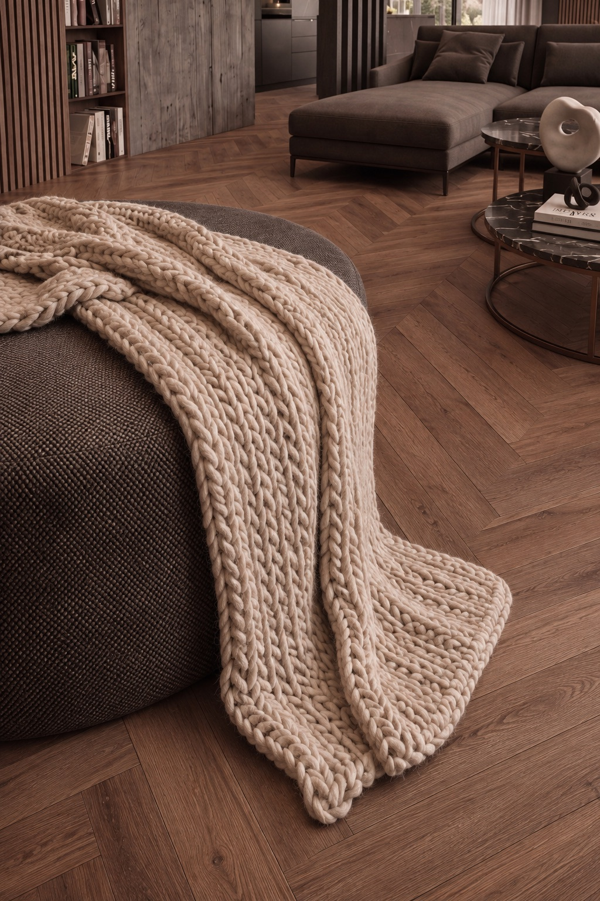

Concepts / 01 von 10Zwei Ebenen mit Auskragung / Visualisierung
Wald.
Ein Haus, das sich unter die Föhren duckt und sich zum Wald hin ganz öffnet.
Concept 01 / EckdatenWald
Oben Schutz. Unten Wald.
- 171m²Wohnfläche gesamt
- 101,44m²Erdgeschoß
- 69,55m²Obergeschoß
- 2Ebenen
- FlachDachform

Die Idee.
Für Menschen, die lieber im Garten sitzen als davor. Unten offen zum Wald, oben ein dunkler Rahmen, der weiter greift und die Terrasse schützt.
Vom Volumen zum Haus01 / 05
- 01Ein klarer Baukörper.
- 02Zwei Ebenen, gegeneinander versetzt.
- 03Das Obergeschoß kragt aus und schützt die Terrasse.
- 04Große Öffnungen nach Süden, geschlossene Seiten nach Norden.
- 05Das Diagramm wird zur Skizze des Hauses.
Film / Visualisierung
Concept 01 / Grundriss und LichtEine Idee, kein Plan
Ein Tag im Wald.
Wie Wald lebt, als Idee. Zieh die Sonne über den Tag und sieh, wo sie hinfällt.
Juni / 07:00Morgensonne von Osten.
Ziehen zum Drehen
Idee / kein Maßstab
Sonne
Deine Variante
171m²
Erdgeschoß 101 m² / Obergeschoß 70 m²Concept Wald, wie gezeichnet.
Concept 01 / InnenErdgeschoß
Raum und Licht.
 Abb. 03 / Wohnen / Visualisierung
Abb. 03 / Wohnen / Visualisierung Abb. 04 / Essen / Visualisierung
Abb. 04 / Essen / Visualisierung
Abb. 05 / Detail / VisualisierungDrinnen sitzen und trotzdem im Wald sein.
 Düne.
Ein Geschoß unter einem langen Dach.Ansehen
Düne.
Ein Geschoß unter einem langen Dach.Ansehen
Nächstes Concept / 02 von 10Alle Concepts
 Abb. 06 / Ankommen / Visualisierung
Abb. 06 / Ankommen / Visualisierung